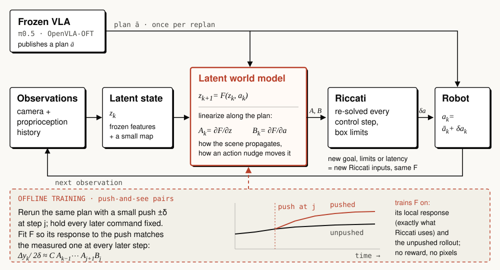

- Home
- Proposal Ideas研究构想
- Jacobian-Accurate World Models导数准确的世界模型
Jacobian-Accurate World Models
A world model that gets the effect of small actions right, so a controller can fix a robot policy’s plan while it runs.让世界模型把“小动作的效果”算准，控制器就能在执行中修正机器人策略的计划。
Miaomiao Dai · One-page research proposal · September 2026 · formerly “Flow2Funnel”一页研究计划 · 2026 年 9 月 · 原名 “Flow2Funnel”
When a robot’s plan starts to go wrong, the useful question is simple: if I nudge the action a little, what happens? That answer is the world model’s Jacobian. Can we learn world models whose Jacobians are accurate, and use them to correct a VLA’s plan as it runs?机器人的计划开始出偏差时，真正有用的问题很简单：把动作轻推一点，会怎样？这个答案就是世界模型的导数（雅可比）。能否学到导数准确的世界模型，并用它在执行中修正 VLA 的计划？

The problem问题
Vision–language–action models (VLAs) plan a chunk of actions from one camera frame and then execute it blind. If the object moves, the plan goes stale: on the DOMINO benchmark, π0.5 succeeds 45% of the time on static scenes but under 10% once the targets move [1]. A world model could help, but world models are trained to imagine the future, not to tell a controller what a small change of action will do.
视觉–语言–动作模型（VLA）看一帧画面就给出一段动作，然后闭眼执行。物体一动，计划就过时：在 DOMINO 基准上，π0.5 在静态场景的成功率是 45%，目标一运动就不到 10% [1]。世界模型本可以帮忙，但它们被训练来“想象未来”，而不是告诉控制器“动作改一点会怎样”。
The idea做法
- One world model. Learn a latent world model F(z, a) from camera and joint history.一个世界模型。从相机与关节历史学一个隐空间世界模型 F(z, a)。
- Train its Jacobian directly. Replay the same plan with a small push at one step and require the model to predict how everything changes afterwards. This makes A = ∂F/∂z and B = ∂F/∂a accurate, not just the predictions.直接训练它的导数。同一个计划在某一步轻推一下再重放一遍，要求模型预测之后每一步的变化。这样练出来的是准确的 A = ∂F/∂z 与 B = ∂F/∂a，而不只是像样的预测。
- Correct at every step. A Riccati (LQR) controller uses A and B to add a small correction to the VLA’s next action. The VLA itself is never changed.每步修正。Riccati（LQR）控制器用 A 和 B 给 VLA 的下一个动作加一个小修正；VLA 本身不做任何改动。
Why the Jacobian: in our pilots, re-planning at every step already forgave errors in how far a push moves things. It cannot forgive a wrong direction, and getting the direction right is exactly what an accurate Jacobian buys.
为什么是导数：初步实验里，每步重解已经能容忍“推了之后动多远”的误差；但方向错了是容忍不了的，而把方向算对，正是准确的导数能带来的。
How we will know怎样判断成败
- Is there room? A controller given the true local response must clearly beat a single global model and a kinematic servo; if not, the task does not need learned Jacobians.有没有余量？给出真实局部响应的控制器，必须明显胜过单一全局模型和运动学伺服；否则这个任务并不需要学导数。
- Is the Jacobian accurate? On pushes it never saw, the predicted responses are within 20%.导数准不准？在没见过的轻推上，预测响应的误差在 20% 以内。
- Does control improve? On new scenes, success beats the VLA alone and a correction head trained on the same data.控制有没有变好？在新场景上，成功率胜过单独的 VLA，也胜过用同样数据训练的修正头。
- Is it reusable? The same model works for new goals, action limits and delays without retraining.能不能复用？换目标、换动作上限、换延迟，同一个模型不重训也能用。
Testbeds: DOMINO dynamic manipulation with the official π0.5 [1], and the standard latency protocol of real-time chunking [2, 3].
测试床：DOMINO 动态操作（官方 π0.5）[1]，以及实时分块的标准延迟评测协议 [2, 3]。
Why it matters意义
If it works, Jacobian accuracy becomes something we can measure and train for in any action-conditioned world model, video world models included, and any robot policy gains a cheap, reusable feedback loop.
如果成立，“导数准不准”就成为任何动作条件世界模型（包括视频世界模型）都能测量、也能训练的指标，而任何机器人策略都能多一个廉价、可复用的反馈回路。
Status, September 2026. Official π0.5 baselines reproduced on a DOMINO subset; the push-and-see probes are being built.当前进展（2026 年 9 月）。已在 DOMINO 子集上复现官方 π0.5 基线；“推一下看看”的探针正在搭建。
References参考文献
- Fang, Li, Wang, Xi, Liang & Bai. Towards Generalizable Robotic Manipulation in Dynamic Environments (DOMINO). 2026.
- Black, Galliker & Levine. Real-Time Execution of Action Chunking Flow Policies. NeurIPS 2025.
- Leave No Observation Behind: Real-time Correction for VLA Action Chunks. 2025.
- Watter, Springenberg, Boedecker & Riedmiller. Embed to Control: A Locally Linear Latent Dynamics Model for Control from Raw Images. NeurIPS 2015.
About me关于我
M.S.E. Robotics student at the University of Pennsylvania, with trajectory-optimization research (HOP, AL-HOP) and π0.5 hardware deployment experience. I would like to pursue this with a world-models group.宾夕法尼亚大学机器人学硕士在读，做过轨迹优化研究（HOP、AL-HOP），也有 π0.5 实机部署经验。希望与世界模型方向的课题组一起推进这个问题。
dmmsjtu@engineering.upenn.edu